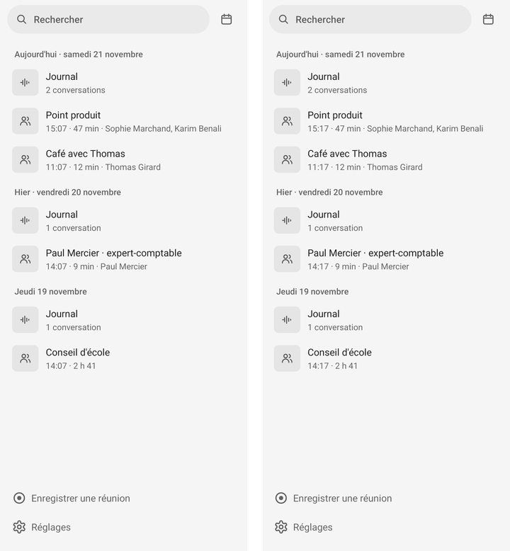
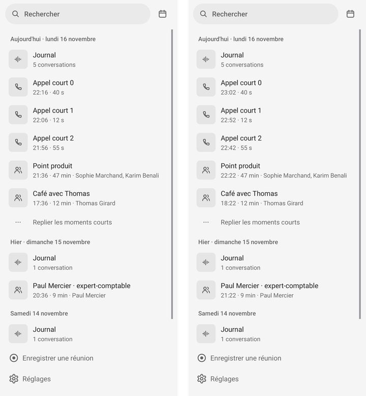
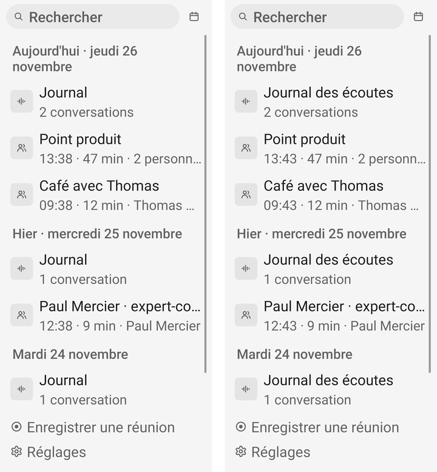
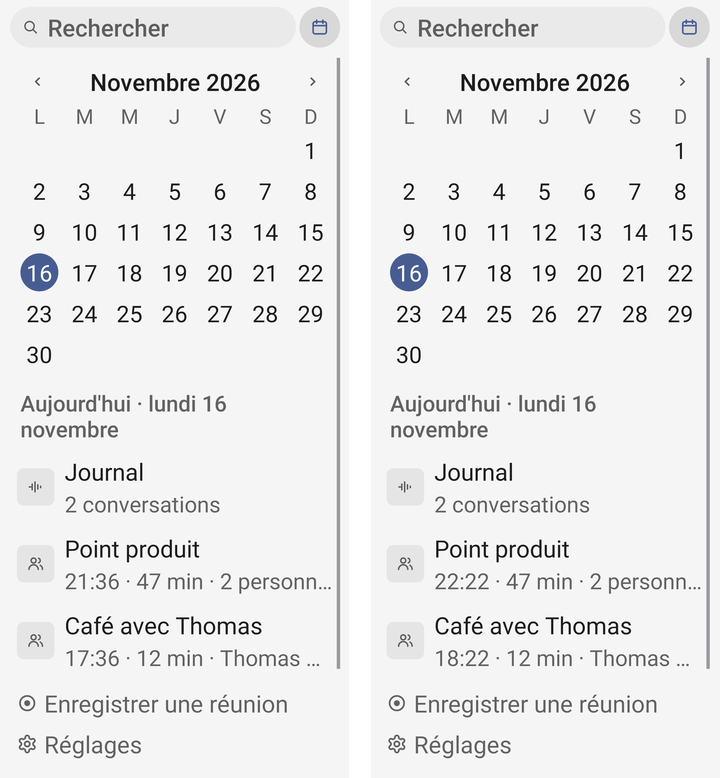
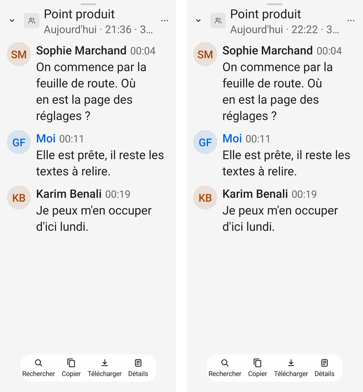
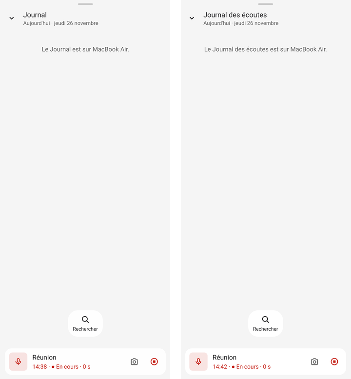
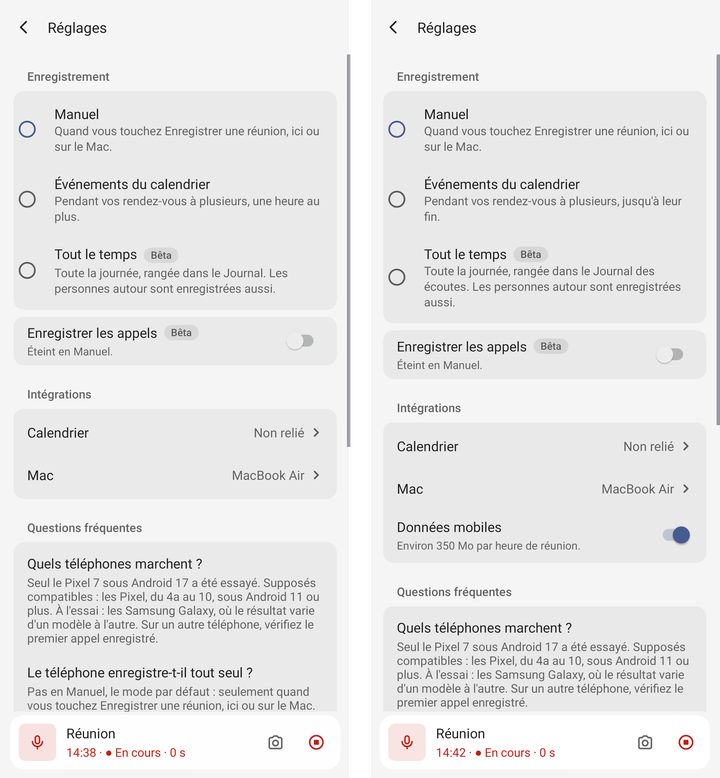
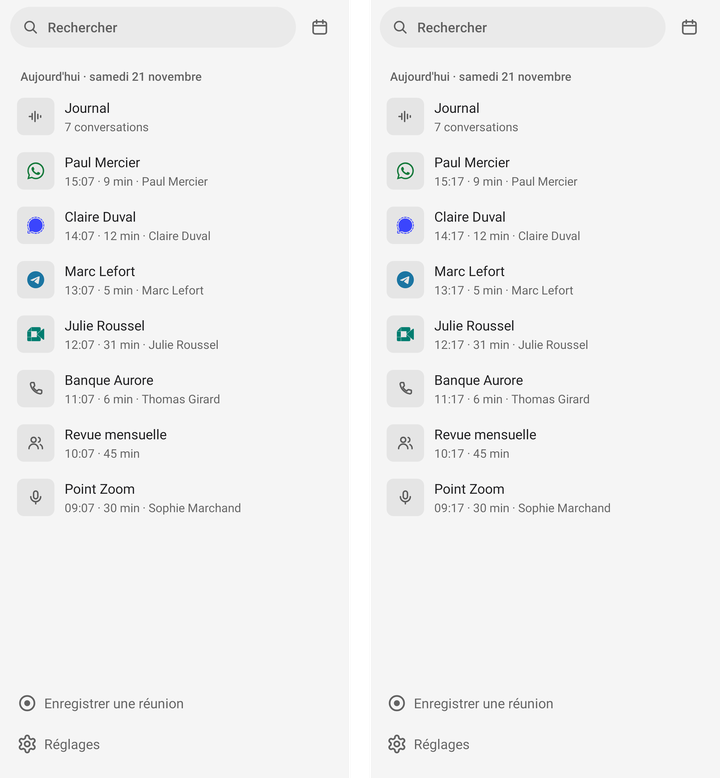
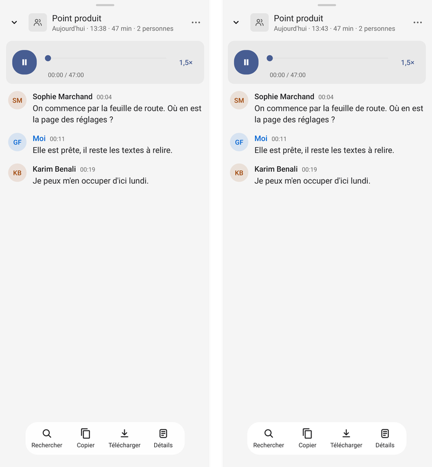

Le Journal d’un jour, en lignes
Une ligne par moment de la journée, avec son heure, son titre et sa durée, qui s’ouvre sur ce qui s’y est dit, sur le Mac comme sur le téléphone.
Pas encore publié
Rien de nouveau depuis la 0.30.0 pour l’instant. Ce qui sera prêt pour la prochaine version s’ajoutera ici, avant de vous arriver.
Déjà dans l’app, mais pas encore ouvert à tous : ces essais s’ouvriront quand ils seront prêts. Rien n’est promis ni daté.
Une ligne par moment de la journée, avec son heure, son titre et sa durée, qui s’ouvre sur ce qui s’y est dit, sur le Mac comme sur le téléphone.
Un plus dans la marge d’un moment de l’Écoute en fait un enregistrement, à son heure, comme les autres.
Ce qui s’enregistre s’ouvre comme un autre enregistrement : le texte en direct, et les captures d’écran à leur heure.
En 4G, en 5G ou sur un autre Wi-Fi, le téléphone Android envoie ses enregistrements au Mac resté allumé chez vous, et reçoit leur texte, sans passer par aucun serveur. Pour cela, Callrecorder demande à votre box d’ouvrir un port vers le Mac ; seul un téléphone déjà relié à ce Mac peut y entrer, et tout ce qui y passe est chiffré. Certains réseaux, d’hôtel ou d’entreprise, ne laissent pas passer : le téléphone garde alors ses enregistrements et les envoie plus tard.
Le son de l’Écoute ne garde que les moments où quelqu’un parle, à deux secondes près, pour prendre moins de place.
Une recherche peut ne rien donner : rien n’est promis ni daté.
Peut-on retrouver un moment par ce qu’on y entendait (de la musique, un rire, la pluie, une gare), et pas seulement par ce qui s’y disait ?
En partie. Un modèle ouvert qui range les sons et les phrases dans le même espace a été essayé sur une semaine d’écoute réelle, face aux bruits que le Mac y avait déjà reconnus. Une question sur deux ou un peu plus trouve le bon moment parmi les cinq premiers : la musique, le ronflement, le train, l’eau qui coule, la vaisselle ou les applaudissements se retrouvent bien. Les rires, les chiens, les oiseaux, la circulation ou les cris se perdent, le plus souvent sous la parole. Pour tenir peu de place, l’index doit être plus grossier, et il perd alors une question. Le Mac reconnaît déjà ces bruits-là chaque heure : chercher dans ce qu’il a reconnu ne coûte rien, et le modèle ouvert ne servirait que pour les sons qu’il ne connaît pas. Rien n’a changé dans l’app.
Au 21 novembre 2026
Dehors, peut-on baisser le bruit de la circulation et de la foule dans ce qui est gardé, sans abîmer la voix ni ce que la transcription en tire ?
Oui, sur la mesure. Des voix enregistrées de près ont été mêlées à de vrais bruits du dehors entendus par le téléphone (circulation, train, foule, vent), du même niveau que la voix jusqu’à dix fois plus bas. Un petit débruiteur ouvert qui tourne sur l’appareil, mêlé à un peu du son d’origine, baisse ce fond sans toucher au niveau de la voix, et le texte qu’on en tire n’y perd rien : il y gagne même quelques mots. Utilisé seul, sans le son d’origine, le même débruiteur efface presque tout le fond, mais abîme parfois la voix dans le vent. Rien n’a changé dans l’app ; reste à l’écouter sur quelques extraits.
Au 20 novembre 2026
Peut-on garder les sons qui entourent la parole (rires, musique, circulation, télévision) dans un format si léger qu’il ne coûte presque rien, tout en pouvant encore les réécouter et les reconnaître ?
Objectif atteint, mesuré en deux fois sur une vingtaine d’heures d’écoute réelles, puis confirmé sur une dizaine d’heures arrivées depuis. Garder tout ce qui entoure la parole à très bas débit ne marche pas : sous 3 Mo par heure, près d’un bruit sur deux se perd. La bonne voie est de ne garder qu’un quart de seconde autour de chaque bruit reconnu, dans un format un peu moins compressé que celui d’aujourd’hui. Ces extraits retrouvent plus de bruits que tout le son gardé au format léger d’aujourd’hui, et le classement s’y trompe presque deux fois moins. Ils ne pèsent qu’une dizaine de pour cent de ce qui entoure la parole. Plus serrés encore, ou au débit d’aujourd’hui, ils perdent des bruits. Rien n’a changé dans l’app ; le changement est prêt à coder.
Au 22 novembre 2026
L’empreinte de votre voix vous reconnaît-elle partout : au casque, au téléphone, dans une salle ?
Oui, dès qu’on la juge sur quelques secondes de voix. Sur les enregistrements où l’on sait qui parle, une empreinte prise au casque vous reconnaît déjà dans une pièce, au Mac comme au téléphone posé à côté. Rejouée avec le modèle d’empreinte de l’app, la mesure corrige celle de la veille : plusieurs empreintes prises à des moments différents n’apportent presque rien. Votre voix se perd sur quelques secondes à cause d’un seuil trop exigeant. Au seuil qui ne prend qu’une autre voix sur cent, l’empreinte du casque vous retrouve presque toujours, même sur un texte lu à trois mètres du téléphone, et toujours sur neuf secondes de voix. Plusieurs empreintes servent quand même au réglage de l’app : elles rehaussent la ressemblance de votre voix et en retrouvent davantage, sans prendre d’autre voix. La version de développement les essaie depuis le 19 novembre, avec neuf secondes de voix pour vous nommer. L’erreur d’une fois sur quatre mesurée avant en réunion ne venait pas de l’empreinte : elle reste la même avec n’importe quelle empreinte. Rejouée sur les réunions prises par le téléphone, l’empreinte que le Mac lui envoie aujourd’hui, prise au casque et sur les notes dictées, ne vous reconnaît en direct qu’une fois sur cinq : de loin, votre voix ne ressemble pas à celle du casque. Une empreinte de votre voix telle que la pièce l’entend, que le Mac sait déjà tirer de ses propres analyses, vous reconnaît près de quatre fois sur cinq, sans calcul de plus. Rien n’a changé dans l’app ; le changement est prêt à coder.
Au 22 novembre 2026
Peut-on retracer une journée par ses lieux, sans lancer de recherche de position ni garder de tracé ?
Mesuré sur huit jours réels, mais rien n’a changé dans l’app. Les seules positions que le téléphone connaît déjà retrouvent plus de neuf fois sur dix les séjours et les trajets d’une journée. Pour juger, deux lecteurs ont tiré ces séjours et ces trajets de ce qui s’est dit et entendu ce jour-là, sans voir aucune position. L’heure d’un départ se retrouve à quelques minutes près. Deux cas échappent : un grand lieu en plein air où l’on se promène, pris pour un trajet, et un court aller-retour à pied tout près. Reste à mesurer le coût en batterie, sur le téléphone.
Au 15 novembre 2026
Sur une longue réunion à plusieurs, le modèle récent qui dit qui parle mêle-t-il deux personnes en une, et le découper en tranches l’en empêche-t-il ?
Oui, il les mêlait, parce qu’il entendait la réunion d’un seul bloc. Découpée en tranches de dix minutes, puis recousue par l’empreinte de chaque voix, la même réunion ne mêle plus personne. Une conversation à deux voix reste aussi juste qu’avant, pour deux fois moins de mémoire. La couture coupait encore une même personne en deux voix d’une tranche à l’autre. Deux ajouts corrigent ce défaut : des tranches qui se recouvrent d’une minute, et une dernière passe qui réunit deux voix proches qui ne parlent jamais en même temps. Avec eux, deux copies d’une même réunion reviennent au niveau d’un seul bloc. Sur le Mac, avec le modèle que l’app embarquerait, une tranche de dix minutes prend deux secondes et moins de 200 Mo de mémoire. Rien n’a changé dans l’app.
Au 18 novembre 2026
Un modèle plus récent dirait-il mieux qui parle quand, surtout quand le téléphone entend les voix de loin ?
Mesuré sur de vraies conversations à deux voix dont on sait qui parle, entendues par le micro du Mac et par le téléphone posé dans la pièce. Les deux modèles donnent presque toujours les longues phrases à la bonne voix. Le plus récent garde mieux les réponses courtes, celles d’un mot ou deux. Il rend aussi les mêmes voix quand on lui donne deux fois la même réunion, ce que le modèle d’aujourd’hui ne fait pas toujours. Une part de l’écart tient à un réglage du modèle d’aujourd’hui, qui écarte toute prise de parole de moins d’une seconde. Pour une réunion à plusieurs dans une pièce, il manque encore un enregistrement où l’on sait qui parle. Sur une longue réunion, le modèle récent semble parfois fondre deux voix en une. Sur le Mac, dans la version que l’app embarquerait, il garde la même justesse et analyse une heure de son en une quinzaine de secondes. Rien n’a changé dans l’app.
Au 22 novembre 2026
En réunion, un modèle peut-il rendre une voix lointaine plus claire à la réécoute, sans l’effacer ?
Non, pas sur de vraies voix. Sur des phrases de synthèse posées dans le vrai son d’un téléphone, un petit modèle de séparation rendait la voix lointaine un peu plus claire, assez vite pour le Mac. Rejoué sur une vraie conversation, entendue à la fois de loin par le téléphone posé dans la pièce et de près par le Mac, le même modèle rend la voix moins intelligible, qu’elle parle seule ou en même temps qu’une autre. Garder chaque fois la meilleure de ses deux sorties n’y change rien. Mêlé au son d’origine, le modèle abîme moins, mais n’aide presque jamais. Rien n’a changé dans l’app, et rien ne changera avec ce modèle.
Au 18 novembre 2026
Une transcription imparfaite garde-t-elle assez de sens pour qu’une IA, qui lit tout l’échange, retrouve ce qui a été dit ?
Mesuré sur une conversation entendue à la fois de près, par le Mac, et de loin, par le téléphone posé dans la pièce. Une IA qui lit le texte de loin en retient presque autant que de près, et ce qu’elle en retient est juste dans plus de neuf cas sur dix. Ses erreurs ont une forme précise : elle confond qui a fait quoi parmi les personnes dont on parle. Le texte de près, lui, ne l’a jamais trompée.
Au 14 novembre 2026
L’app peut-elle dire ce qu’on entend autour d’une conversation, et surtout reconnaître une télévision, une radio ou une vidéo, pour ne pas les prendre pour une vraie conversation ?
Les bruits de chaque heure sont classés sur le Mac, sans être montrés. Le moteur d’Apple en trouve plus que les modèles ouverts essayés. Pour les médias, un petit classificateur de sons ouvert, complété par une couche apprise sur des enregistrements réels, les reconnaît sans passer par la langue ni par le texte. Il retrouve les médias en français sans en avoir vu un seul (0,93 de séparation, 0,5 étant le hasard), et la distance ne le trompe pas. Dans une conversation mêlée de vidéos, le son seul ne dit pas quelles phrases viennent de la vidéo. Jugé voix par voix, il replie presque toutes les phrases des vidéos et très peu de la conversation. Les annonces des transports lui échappaient. Une petite couche à part, apprise sur des trajets réels, les reconnaît désormais presque toutes dans l’écoute, sans replier une conversation de plus et en gardant plus de médias qu’avant. Rien de cette seconde couche n’est encore dans l’app ; elle est prête à coder. Depuis que l’app ne juge plus les médias pendant un appel qu’elle connaît, aucun appel sur haut-parleur n’est pris pour un média. Une fois les voix des vidéos repliées, la liste de l’écoute n’a rien à ranger de plus : sur cinq jours, aucun passage ne change de genre (19 novembre).
Au 19 novembre 2026
L’écoute de fond est surtout faite de silence. Peut-on ne garder que les passages où l’on parle, sans rien perdre ?
Mesuré, et en essai dans la version de développement depuis le 17 novembre. En gardant deux secondes autour de chaque passage de parole, aucun mot ne se perd, même d’une voix lointaine. Le son de ces passages doit rester : le texte d’une voix lointaine ne le remplace pas, même quand plusieurs moteurs s’accordent.
Au 11 novembre 2026
Peut-on tout garder, chaque jour, sans que la place devienne un problème, et sans que le texte y perde ?
L’écoute arrive en qualité pleine, est transcrite, puis repasse en format léger : le premier texte ne perd rien. Mesuré ensuite sur neuf heures réelles, le format léger s’entend presque aussi bien et perd un bruit sur dix. Il pénalise surtout une nouvelle transcription d’une voix lointaine. Un autre format, plus léger, ferait au moins aussi bien. Reste à le vérifier avec le moteur de transcription et la reconnaissance des sons du Mac.
Au 12 novembre 2026
Sans casque, ce que joue le Mac revient dans son micro. Peut-on retirer cet écho du son lui-même, et pas seulement les phrases en double ?
Un petit modèle de 2,3 Mo, qui tourne sur le Mac après l’appel, est en essai sur la version de développement. Le son d’origine reste intact : seule la transcription utilise le son nettoyé.
Au 10 novembre 2026
Un autre moteur que celui du Mac transcrirait-il mieux le français ?
Non, ni sur un son propre, ni sur une voix entendue de loin par le téléphone. Deux moteurs ouverts plus récents ont été essayés sur la même conversation, entendue de près et de loin. Le meilleur s’approche du Mac sans le rattraper, et il tourne trop lentement pour passer sans se faire sentir. L’autre fait moins bien que les moteurs déjà essayés. Le désaccord des moteurs sert à montrer où relire, pas à confirmer le texte.
Au 18 novembre 2026
Le téléphone peut-il reconnaître, pendant qu’elle a lieu, une conversation qui mérite un meilleur son, sans bouton ni rendez-vous ?
Une règle simple est en essai sur le téléphone de développement, mais elle n’y a pas encore tourné. Un réglage oublié la coupait depuis le 10 novembre (relevé le 19), et elle sera jugée d’ici au 3 décembre. Quand vous parlez et qu’une autre voix parle aussi, le téléphone monte la qualité en trois minutes environ. Rejouée sur trois fois plus d’écoute, avec en plus la garde des médias qui reconnaît une télévision au son, la règle monte deux fois moins souvent pour un média. Les conversations des autres la trompent encore une fois sur deux. Mais ces cas tombent tous sur trois jours où le téléphone entend une voix aussi proche de la vôtre que dans vos vraies conversations : vous y preniez sans doute part. Ailleurs, quand le Mac entend d’autres voix sans vous, la règle ne monte qu’une fois sur dix.
Au 15 novembre 2026
Le téléphone peut-il dire qui parle pendant qu’il enregistre, sans attendre le Mac ?
Un essai tourne sur le téléphone de développement. Sur trois heures de votre voix, dans 23 vraies réunions, le téléphone vous reconnaît sept fois sur dix. Aucun réglage ne le mène à neuf sans qu’il se trompe bien plus souvent. Un détecteur de parole plus large n’y change rien, une empreinte prise au micro du téléphone non plus : la limite vient du modèle, sur une voix captée de loin. Un seuil un peu plus bas gagnerait dix points pour peu d’erreurs. Le Mac refait de toute façon le travail sur l’enregistrement entier. Ces sept fois sur dix supposaient une empreinte de votre voix prise dans la pièce : avec celle que le Mac envoie vraiment au téléphone, prise au casque, c’est une fois sur cinq (fiche « Reconnaître votre voix »).
Au 14 novembre 2026
Posé sur la table, le téléphone entend une réunion par trois micros. Savoir d’où vient chaque voix aide-t-il à dire qui parle ?
Mesuré sur de vraies réunions : la réponse est non, là où ça compterait. Quand le téléphone est immobile, à portée de bras des voix, la direction du son donne presque toujours la bonne voix. Elle rattrape même les réponses d’un mot ou deux que le timbre perd. Mais dans les réunions prises par le téléphone seul, les voix sont à plusieurs mètres et la pièce résonne. La direction n’y dit pas mieux qui parle que le hasard, et quand elle contredit le timbre de la voix, le timbre a raison. Garder les trois micros à part prend huit fois la place de l’enregistrement. La suite proposée : retirer cet essai, et gagner les réponses courtes autrement, par un modèle plus récent.
Au 16 novembre 2026
Les corrections que Claude refait d’une conversation à l’autre peuvent-elles devenir des règles que l’app applique seule, sans lui ?
Presque pas. Mesuré en rejouant chaque jour les règles apprises les jours d’avant : près de neuf corrections sur dix sont nouvelles à chaque fois. Les règles prudentes de l’app ne se trompent jamais, mais ne font qu’une correction sur cent. Les corrections qui reviennent portent sur des noms d’entreprises, de produits et des sigles. Ils reviennent avec le sujet, quelques jours plus tard, plutôt qu’avec la personne à qui l’on parle. Les remplacer d’office dès la première fois tombe à côté une fois sur trois. L’app garde donc ses règles prudentes, et la relecture reste nécessaire.
Au 16 novembre 2026
Le successeur du modèle de la recherche par le sens retrouve-t-il plus souvent le bon passage, sans prendre plus de place ?
Non. Sur 124 questions posées au corpus réel, parmi plus de 27 000 répliques, le modèle plus récent retrouve moins souvent le bon passage que celui de l’app. L’écart se voit surtout sur la première réponse, et autant sur les reformulations que sur les questions posées dans une autre langue. La façon dont l’app range les vecteurs n’y est pour rien : en pleine précision et en vecteurs entiers, il reste derrière. L’app garde son modèle.
Au 17 novembre 2026
Le Journal peut-il couper la journée là où quelque chose change vraiment (un appel commence ou finit, un rendez-vous de l’agenda, un départ d’un lieu), plutôt qu’au fil des morceaux d’enregistrement ?
Mesuré sur cinq journées réelles, face aux moments qu’ont posés des lecteurs qui ne voyaient ni la règle ni les faits. Les faits connus sont justes mais rares : à peine une vraie frontière sur cinq tombe près d’un appel, d’un rendez-vous ou d’un départ. Le reste du temps, ce qui change se lit dans le silence et dans ce qui se dit. Une règle simple, qui suit la parole d’un seul fil, coupe sur cinq minutes de silence et sur les bords des appels, sans plus couper au bord des heures, fait deux fois moins de frontières, plus souvent justes, et coupe deux fois moins souvent une conversation en cours. Les départs d’un lieu, eux, tombent souvent en pleine conversation : ils servent à nommer un moment, pas à le couper. Rien n’a changé dans l’app.
Au 21 novembre 2026
Une voix que l’app ne connaît pas peut-elle garder la même étiquette d’un bout à l’autre de la journée, pour qu’un seul nom suffise, sans que l’app la reconnaisse plus de deux jours après l’avoir entendue ?
Non, pas au timbre seul. La règle est fixée : l’empreinte d’une voix qui n’a pas d’empreinte acceptée s’efface quand cette voix n’a pas été entendue depuis 48 heures, nommée ou non, et chaque nouvelle écoute relance les 48 heures. Rejouée sur douze jours réels, avec un modèle d’empreinte ouvert à la place de celui de l’app, elle relie mal une même personne d’un enregistrement à l’autre. Dans la pièce, une même voix se retrouve bien d’une heure à l’autre. Mais une voix entendue au téléphone ressemble souvent plus à une autre personne qu’à elle-même entendue dans la pièce. Comparer seulement dans le même canal supprime les confusions, sans encore réunir une seule personne sur la journée. La vérité était mince : les voix nommées d’une vingtaine de conversations.
Au 21 novembre 2026
Comment montrer une journée entière, enregistrements et écoute de fond, sans la montrer deux fois ?
En maquettes : un fil continu qui traverse les jours, une seule recherche, le calendrier comme simple sélecteur. Rien n’est codé.
Au 10 novembre 2026
Pendant un appel, Claude lit déjà le texte de l’écran. Les images de l’écran l’aident-elles en plus à savoir qui était là ?
Non, pas pour les personnes : avec ou sans images, la relecture trouve les mêmes, et les noms viennent du texte lu à l’écran. Les images servent ailleurs. Elles illustrent les moments où l’on montre quelque chose, comme un partage d’écran, une page ou une photo, et la fenêtre les place à côté de ce qui se dit.
Au 15 novembre 2026
Un moteur de transcription qui « boucle » redit la même phrase plusieurs fois de suite. Cela arrive-t-il dans votre mémoire, et faut-il s’en garder ?
Mesuré sur près de trois semaines de transcriptions réelles. Le moteur d’Apple, celui de l’app, ne boucle pas : les rares redites qu’on trouve dans son texte sont de vraies redites, une voix qui insiste ou une télévision. Whisper, que l’app ne prend plus que si Apple échoue, boucle nettement plus souvent. Aucune protection n’est nécessaire avec le moteur d’aujourd’hui. Rien n’a changé dans l’app.
Au 17 novembre 2026
Quand le bon nom est déjà dans l’invitation, dans vos contacts ou à l’écran pendant l’appel, la transcription l’écrit-elle bien ?
Mesuré sur tout le corpus. Dans les appels, la relecture fait déjà le travail : aucun ne garde un nom mal écrit alors que l’invitation ou l’écran le donnait. Restent les noms de vos contacts dans l’écoute de fond, que personne ne relit : près d’une écoute parlée sur cinq en garde au moins un mal écrit. Une règle simple, sans Claude, corrige un mot qui n’est pas un mot courant et se prononce exactement comme le nom d’un contact. Rejouée sur trois semaines d’écoute, elle se trompait plus souvent : des mots rares du dictionnaire, qui sonnent comme un nom, passaient pour des noms. Elle ne doit toucher qu’un mot que vous n’avez jamais écrit autrement, et alors elle ne se trompe presque plus. Rien n’a changé dans l’app : une demande prête à coder la décrit.
Au 22 novembre 2026
Quand l’enregistrement démarre avant la réunion (le trajet, l’attente, la salle d’attente de la visio) ou continue après, l’app peut-elle trouver seule le moment où elle commence et finit vraiment ?
Oui, à condition de le demander. Dans chaque rendez-vous de l’agenda mesuré, la réunion commence de 1 à 16 minutes après le début de l’enregistrement. L’heure prévue dans l’agenda ne le dit presque jamais, puisqu’on est souvent en retard. La relecture de Claude, qui lit déjà toute la conversation, trouve le vrai début dès qu’on lui pose la question. La vue d’un enregistrement s’en sert pour mettre à part ce qui précède.
Au 17 novembre 2026
Combien de processeur l’app prend-elle par heure d’écoute de fond, où, et comment le diviser par deux ?
Inventaire et premières mesures faits ; six pistes ouvertes, la mesure du processeur par travail d’abord.
Au 22 novembre 2026
Chaque fois, avant à gauche, après à droite, sur des conversations fictives.



















